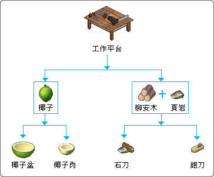
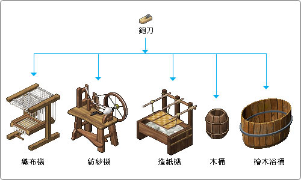

制作入门
|
 |
| ◎只要有一颗椰子，进入玩家的家中点选制作选单便可以作出椰子盆。在收集到柳安木和页岩后还可以制作出石刀跟刨刀。这些都是游戏中初期的基本道具。 |
| ◎玩家制作好椰子盆后，可以收集白色黏土和柴薪做成低温窑。制成灶之后，可以离析出淡水、蒸馏水。使用熔铁炉可以制作出很多必要的小零件和道具，几乎所有和金属相关的道具都需要用到熔铁炉。像是大至锻铁平台或氢气产生器，小至钉子、铜片、锡片等等，皆是合成不可缺的小零件！ |
|  |
| ◎基本的刨刀也可以做出很多大型器具，如实用的织布机、纺纱机、造纸机、木桶、桧木浴桶等等。 |
| ◎台锯可大量且大面积裁切木材，可以制作出玩家家中摆放的大型家具、或其它大型器具所需的组件，如主桅杆。配合线锯作出的齿轮和其它道具可以制作出离心机、手动搅拌器等等。 |
| ◎从木工车床可制造出的东西更多样化了！除了一些大型器具组装的零件和半成品外，另外可以制造出来的成品像是可消除疲劳的淋浴间、实用性高的蓄水槽、风车、水车、自动织布机、自动纺纱机等等。 |
| ◎由金属研磨设备可以做出很多精密金属器具的组件或成品，如果要制作出大型交通工具或功能性高的器具，不要遗漏它喔！延伸制造出的原油加工设备可以分离出汽油、轻油、焦油、重油。起重机方便将大型重物举起配置组合。淡化海水装置可过滤大量的海水成为可以饮用的淡水。 |
| ◎精密起子组可以制作出攻击力强的武器，火枪、长枪甚至是火箭筒等等。 |
| ◎有了电焊器再加上其它所需的道具，可以制作出超炫的机器人喔！ |
|
|